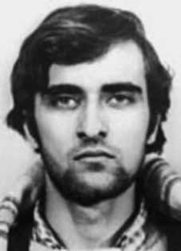

Gildo
Macedo
Lacerda
CIRCUNSTÂNCIAS DA MORTE
Gildo Macedo Lacerda foi morto por agentes do DOI-CODI/IV, em 28 de outubro de 1973, junto com o companheiro de militância na APML, José Carlos Novaes da Mata Machado.Os dois tinham sido presos em dias e locais distintos – Mata Machado no dia 19 de outubro, em São Paulo, e Gildo no dia 22 de outubro, em Salvador – e transferidos para Recife, onde foram mortos sob tortura.
A versão oficial veiculada em jornais da época informava que Gildo Macedo Lacerda teria morrido junto com José Carlos da Mata Machado em um tiroteio provocado por outro colega de militância chamado “Antônio”. Segundo a nota oficial, os dois militantes da APML tinham sido presos e tinham confessado um encontro com esse terceiro colega na Avenida Caxangá, em Recife, no dia 28 de outubro de 1973.
Acompanhando as forças de segurança ao ponto de encontro para que fosse efetuada a prisão do suposto companheiro de organização, os dois militantes teriam sido baleados: “Antônio” teria percebido a presença dos policiais à paisana e disparado contra Gildo e José Carlos, conseguindo fugir na sequência. Anos mais tarde, em 1993, o Ministério da Aeronáutica enviou um relatório ao então ministro da Justiça, Maurício Correa, prestando explicações sobre alguns desaparecidos políticos.
Sobre Gildo, o relatório informava que é “dado como desaparecido pelos familiares, pela imprensa e por defensores dos Direitos Humanos e Assistência Judiciária da OAB/RJ”, mas reiterava que foi morto em tiroteio no dia 28 de outubro de 1973, junto com José Carlos da Mata Machado, reforçando a versão oficial. Essa versão buscou encobrir não só a morte de Gildo e de José Carlos, mas também o desaparecimento de Paulo Stuart Wright, que seria o “Antônio” mencionado na história, codinome usado pelo militante que acabou se tornando mais um desaparecido político da Ditadura Militar.
Essa tentativa de encobrir a morte dos militantes ficou conhecida como “Teatro de Caxangá”, em alusão ao caráter fantasioso do episódio. Em oposição à versão oficial, a CEMDP conseguiu reunir depoimentos de ex-presos políticos que viram os dois militantes no DOI-CODI de Recife sendo vítimas de torturas brutais, às quais não resistiram. Em declarações prestadas, Carlúcio de Souza Júnior afirmou que tanto Gildo como José Carlos chegaram às dependências do DOI-CODI de Recife quando ele se encontrava preso e que os dois ficaram na sala de interrogatório, onde foram submetidos a torturas, sendo possível ouvir seus gritos a noite inteira.
Segundo o depoente, na madrugada do dia 27 de outubro de 1973, quando foi levado para a sala de interrogatório, sentiu o cheiro forte de vômito, fezes e sangue, assim como pôde ouvir os gemidos de Gildo e de José Carlos. No dia seguinte, Carlúcio foi informado pelo companheiro de cela, Rubens Lemos, que os dois militantes não tinham resistido às torturas.
Gildo tinha sido preso em Salvador junto com a sua esposa Mariluci, no dia 22 de outubro de 1973, e já tinha sofrido torturas no Quartel do Barbalho, onde permaneceu até o dia 25, segundo o depoimento de Oldack de Miranda, que estava preso no mesmo órgão. Foi então transferido para o DOI-CODI do IV Exército, em Recife, onde, junto com José Carlos da Mata Machado, foi morto sob tortura no dia 28 de outubro de 1973.
Na época, os integrantes da APML vinham sendo rastreados por agentes da repressão com auxílio das informações fornecidas por Gilberto Prata Soares, ex-membro da AP e cunhado de José Carlos da Mata Machado, que trabalhou como informante para o Centro de Informações do Exército (CIE) a partir de março de 1973, identificando os militantes da Ação Popular. Foi instaurado, na época, um inquérito policial na Delegacia de Segurança Social de Pernambuco para apurar a morte dos militantes, mas acabou sendo arquivado em janeiro de 1974, por alegada ausência de elementos para o oferecimento de denúncia.
O relatório do inquérito policial, datado do dia 29 de novembro de 1973, registra que os corpos dos dois militantes foram levados ao Instituto Médico-Legal (IML) pelos sargentos José Mario dos Santos e Francisco de Azevedo Barbosa. Posteriormente, em 1995, o delegado Jorge Tasso de Souza, que assinou o ofício de encaminhamento dos corpos para o IML, declarou que estranhou o fato de os corpos terem sido conduzidos por militares do Exército e de não ter sido solicitada a presença de autoridades policiais.
Não foi emitida, na época, nenhuma certidão de óbito explicando a causa das mortes, e os corpos dos dois militantes não foram entregues às famílias. Tanto Gildo como José Carlos foram enterrados como indigentes no Cemitério da Várzea, em caixão de madeira sem tampa.
A família de José Carlos da Mata Machado conseguiu recuperar o seu corpo e sepultá-lo, algumas semanas após a morte. Por sua vez, os restos mortais de Gildo não foram, até o momento, localizados e identificados.
Gildo Macedo Lacerda was killed by DOI-CODI/IV agents, on October 28, 1973, along with his fellow member of the APML, José Carlos Novaes da Mata Machado. The two had been arrested on different days and locations – Mata Machado on October 19, in São Paulo, and Gildo on October 22, in Salvador – and transferred to Recife, where they were killed under torture.
The official version published in newspapers at the time reported that Gildo Macedo Lacerda had died along with José Carlos da Mata Machado in a shootout caused by another fellow activist called “Antônio”. According to the official note, the two APML militants had been arrested and had confessed to a meeting with this third colleague on Avenida Caxangá, in Recife, on October 28, 1973.
Accompanying the security forces to the meeting point for the arrest of their alleged fellow organizer, the two militants were allegedly shot: “Antônio” allegedly noticed the presence of the plainclothes police officers and shot Gildo and José Carlos, managing to escape afterwards. Years later, in 1993, the Ministry of Aeronautics sent a report to the then Minister of Justice, Maurício Correa, explaining some missing politicians.
Regarding Gildo, the report stated that he was “reported missing by his family, the press and defenders of Human Rights and Legal Assistance from the OAB/RJ”, but reiterated that he was killed in a shootout on October 28, 1973, along with José Carlos da Mata Machado, reinforcing the official version. This version sought to cover up not only the deaths of Gildo and José Carlos, but also the disappearance of Paulo Stuart Wright, who would be the “Antônio” mentioned in the story, the codename used by the militant who ended up becoming yet another missing politician from the Military Dictatorship.
This attempt to cover up the death of the militants became known as “Caxangá Theater”, in allusion to the fantasy nature of the episode. In opposition to the official version, CEMDP managed to gather testimonies from former political prisoners who saw the two militants at DOI-CODI in Recife being victims of brutal torture, which they did not resist. In statements made, Carlúcio de Souza Júnior stated that both Gildo and José Carlos arrived at the DOI-CODI premises in Recife when he was under arrest and that the two remained in the interrogation room, where they were subjected to torture, and their screams could be heard throughout the night.
According to the deponent, in the early hours of October 27, 1973, when he was taken to the interrogation room, he smelled a strong smell of vomit, feces and blood, as well as hearing the moans of Gildo and José Carlos. The following day, Carlúcio was informed by his cellmate, Rubens Lemos, that the two militants had not resisted the torture.
Gildo had been arrested in Salvador together with his wife Mariluci, on October 22, 1973, and had already suffered torture in the Barbalho Barracks, where he remained until the 25th, according to the testimony of Oldack de Miranda, who was imprisoned in the same institution. He was then transferred to DOI-CODI of the IV Army, in Recife, where, together with José Carlos da Mata Machado, he was killed under torture on October 28, 1973.
At the time, members of the APML were being tracked by repression agents with the help of information provided by Gilberto Prata Soares, former member of the AP and brother-in-law of José Carlos da Mata Machado, who worked as an informant for the Army Information Center (CIE) from March 1973, identifying the Popular Action militants. At the time, a police investigation was opened at the Pernambuco Social Security Police Station to investigate the deaths of the militants, but it ended up being archived in January 1974, due to an alleged lack of information to file a complaint.
The police investigation report, dated November 29, 1973, records that the bodies of the two militants were taken to the Instituto Médico-Legal (IML) by sergeants José Mario dos Santos and Francisco de Azevedo Barbosa. Later, in 1995, delegate Jorge Tasso de Souza, who signed the letter sending the bodies to the IML, declared that he was surprised by the fact that the bodies had been taken by Army soldiers and that the presence of police authorities had not been requested.
At the time, no death certificate explaining the cause of death was issued, and the bodies of the two militants were not handed over to their families. Both Gildo and José Carlos were buried as paupers in the Várzea Cemetery, in a wooden coffin without a lid.
José Carlos da Mata Machado's family managed to recover his body and bury him, a few weeks after his death. In turn, Gildo's remains have not, to date, been located and identified.
Gildo Macedo Lacerda fue asesinado por agentes del DOI-CODI/IV, el 28 de octubre de 1973, junto con su compañero de la APML, José Carlos Novaes da Mata Machado. Los dos habían sido arrestados en días y lugares diferentes – Mata Machado el 19 de octubre, en São Paulo, y Gildo el 22 de octubre, en Salvador – y trasladados a Recife, donde fueron asesinados bajo tortura.
La versión oficial publicada en los periódicos de la época informaba que Gildo Macedo Lacerda había muerto junto con José Carlos da Mata Machado en un tiroteo provocado por otro compañero activista llamado “Antônio”. Según la nota oficial, los dos militantes de la APML habían sido detenidos y confesaron haber tenido un encuentro con este tercer colega en la Avenida Caxangá, en Recife, el 28 de octubre de 1973.
Mientras acompañaban a las fuerzas de seguridad al punto de encuentro para la detención de su presunto compañero organizador, los dos militantes supuestamente fueron baleados: “Antônio” supuestamente notó la presencia de los policías vestidos de civil y disparó a Gildo y José Carlos, logrando escapar después. Años más tarde, en 1993, el Ministerio de Aeronáutica envió un informe al entonces Ministro de Justicia, Maurício Correa, explicando algunos políticos desaparecidos.
Respecto a Gildo, el informe señala que fue “denunciado como desaparecido por sus familiares, la prensa y los defensores de los Derechos Humanos y de la Asistencia Legal de la OAB/RJ”, pero reiteró que fue asesinado en un tiroteo el 28 de octubre de 1973, junto con José Carlos da Mata Machado, reforzando la versión oficial. Esta versión buscaba encubrir no sólo las muertes de Gildo y José Carlos, sino también la desaparición de Paulo Stuart Wright, quien sería el “Antônio” mencionado en la historia, nombre en clave utilizado por el militante que terminó convirtiéndose en un político más desaparecido de la Dictadura Militar.
Este intento de encubrir la muerte de los militantes pasó a ser conocido como “Teatro Caxangá”, en alusión al carácter fantasioso del episodio. Contra la versión oficial, el CEMDP logró recoger testimonios de ex presos políticos que vieron a los dos militantes del DOI-CODI en Recife ser víctimas de brutales torturas a las que no resistieron. En declaraciones, Carlúcio de Souza Júnior afirmó que tanto Gildo como José Carlos llegaron a las instalaciones del DOI-CODI en Recife cuando él estaba detenido y que los dos permanecieron en la sala de interrogatorios, donde fueron sometidos a torturas, y sus gritos se escucharon durante toda la noche.
Según el declarante, en la madrugada del 27 de octubre de 1973, cuando fue conducido a la sala de interrogatorios, percibió un fuerte olor a vómito, heces y sangre, además de escuchar los gemidos de Gildo y José Carlos. Al día siguiente, Carlúcio fue informado por su compañero de celda, Rubens Lemos, de que los dos militantes no habían resistido la tortura.
Gildo había sido detenido en Salvador junto con su esposa Mariluci, el 22 de octubre de 1973, y ya había sufrido torturas en el Cuartel Barbalho, donde permaneció hasta el día 25, según el testimonio de Oldack de Miranda, quien estaba preso en la misma institución. Luego fue trasladado al DOI-CODI del IV Ejército, en Recife, donde, junto con José Carlos da Mata Machado, fue asesinado bajo tortura el 28 de octubre de 1973.
En ese momento, los miembros de la APML estaban siendo rastreados por agentes de represión con la ayuda de informaciones proporcionadas por Gilberto Prata Soares, ex miembro de la AP y cuñado de José Carlos da Mata Machado, quien trabajó como informante para el Centro de Información del Ejército (CIE) desde marzo de 1973, identificando a los militantes de Acción Popular. En su momento, se abrió una investigación policial en la Comisaría de la Seguridad Social de Pernambuco para investigar la muerte de los militantes, pero terminó archivada en enero de 1974, por supuesta falta de información para presentar una denuncia.
El informe de la investigación policial, de 29 de noviembre de 1973, registra que los cuerpos de los dos militantes fueron llevados al Instituto Médico-Legal (IML) por los sargentos José Mario dos Santos y Francisco de Azevedo Barbosa. Posteriormente, en 1995, el delegado Jorge Tasso de Souza, quien firmó la carta de envío de los cadáveres al IML, declaró que le sorprendía que los cadáveres hubieran sido llevados por soldados del Ejército y que no se hubiera solicitado la presencia de autoridades policiales.
En ese momento no se emitió ningún certificado de defunción que explicara la causa de la muerte y los cuerpos de los dos militantes no fueron entregados a sus familias. Tanto Gildo como José Carlos fueron enterrados como indigentes en el Cementerio de Várzea, en un ataúd de madera sin tapa.
La familia de José Carlos da Mata Machado logró recuperar su cuerpo y enterrarlo, pocas semanas después de su muerte. Por su parte, los restos de Gildo, hasta la fecha, no han sido localizados e identificados.